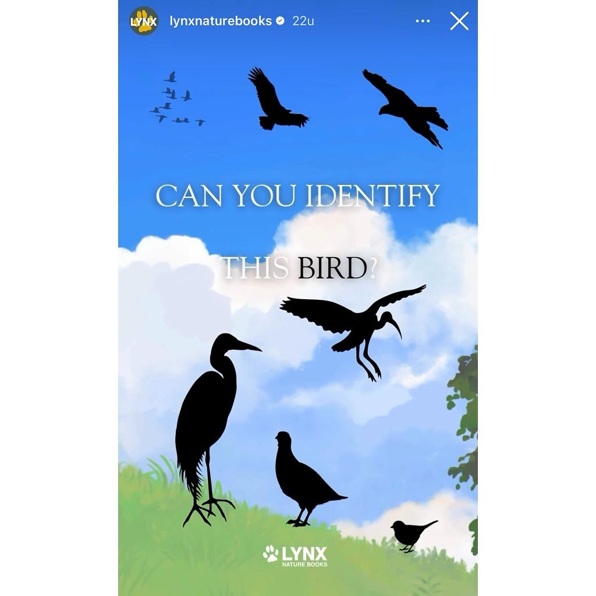
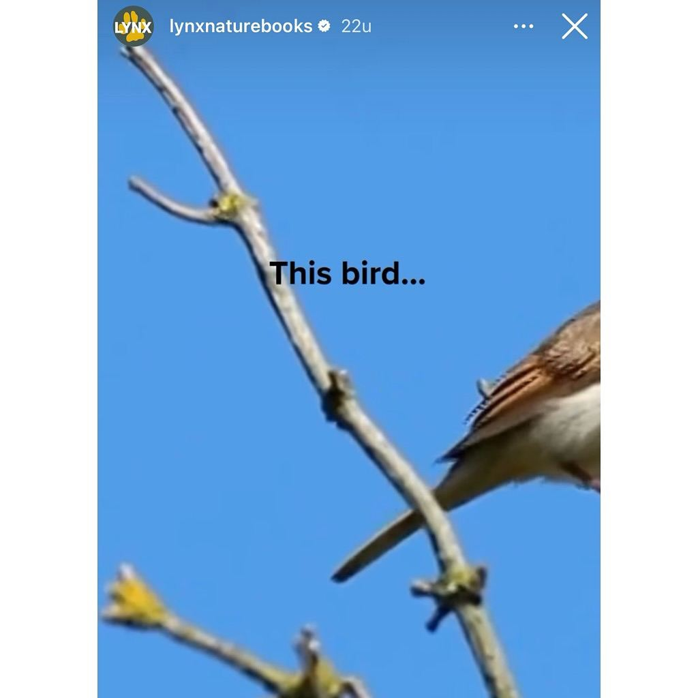
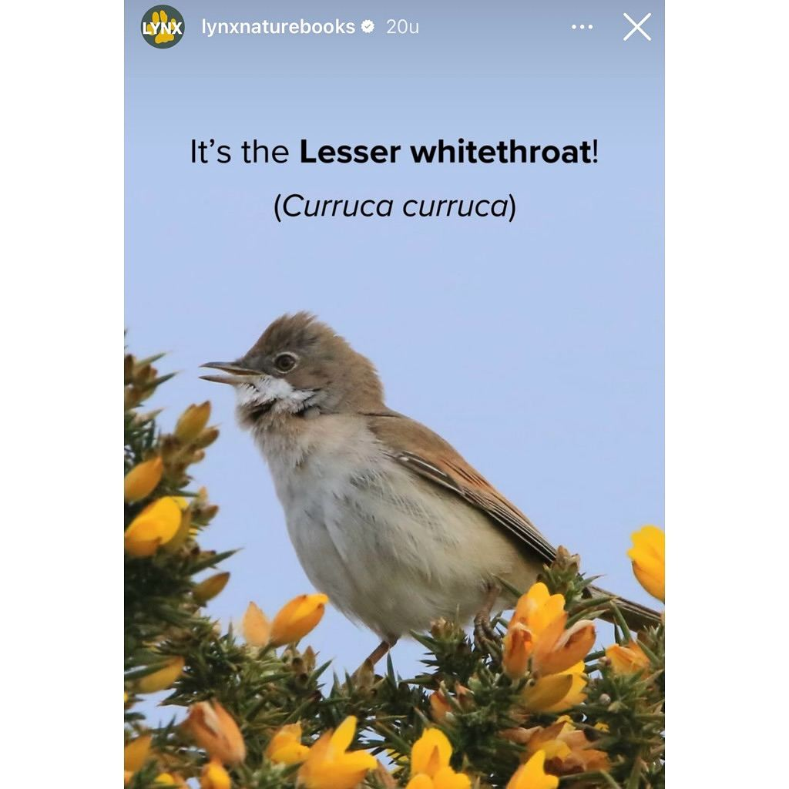

Grasmus, geen braamsluiper
28 mei 2025 · Lynx Nature Books
- Op de foto
- Grasmus
- Het ging over
- Braamsluiper



Ze maken mooie boeken bij @lynxnaturebooks maar het doen van een ‘vogeldeterminatiequiz’ is niet voor ze weggelegd. Het antwoord is namelijk een Grasmus (Common Whitethroat) en geen Braamsluiper (Lesser Whitethroat). Als ze in hun eigen boeken hadden gekeken hadden ze deze fout niet gemaakt 😉